Workshop: Build Multiplayer Experience with GPT
Discussing the potential of ChatGPT and Prompt Engineering in building an intro-level multiplayer game.
2023, Associated with Columbia TC Game Research Lab
Background
Building a game is hard, especially building a multiplayer game. The complexities of real-time interactions, network synchronization, and ensuring a seamless experience for all players can be daunting for even the most seasoned developers.
In the realm of game development, the advent of artificial intelligence has opened up new avenues for creativity and efficiency. Among the AI tools, OpenAI's ChatGPT has emerged as a powerful ally for developers, offering the potential to automate and enhance various aspects of the game creation process. Enabling game creation process with prompts in place of coding is particularly helpful for people from non-CS background.
In the realm of game development, the advent of artificial intelligence has opened up new avenues for creativity and efficiency. Among the AI tools, OpenAI's ChatGPT has emerged as a powerful ally for developers, offering the potential to automate and enhance various aspects of the game creation process. Enabling game creation process with prompts in place of coding is particularly helpful for people from non-CS background.
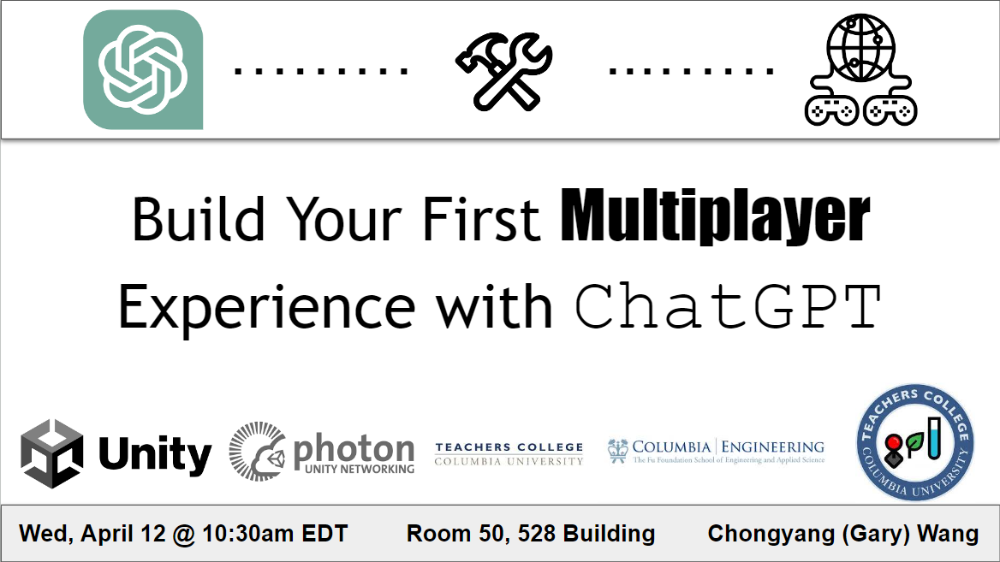
Poster
Target Audience
Game fans, GRL participants, or students come from interdisciplinary fields, but the majority didn't have a strong coding background.
Goals
This workshop aimed to create a fun, interactive, highly received learning experience for participants with a weak coding background. Introduce the basics of multiplayer and useful prompting techniques for creating a simple multiplayer game.
Content
- Background and introduction.
- Multiplayer basics.
- * Fun multiplayer mechanics learning activities.
- Prompting tips and multiplayer-related terminologies.
- Multiple discussion sections.
- An on-hand practice project(multiplayer Pong).
......
* A learning activity showcase:
This activity aimed to let the participants know the working process of one of the basic synchoronization mechanics - RPC (Remote Procedural Call) works, and what roles that each instance (server, networked object, etc.) play in such process.
In the the activity, audiences were into 2 splited areas (can't see each other), each represents a standalone (one is owned by the red player, another is owned by blue), I selected 5 volunteers from the participant group, playing the roles:
- (1.1) Red player (Owner) in Standalone 1.
- (1.2) Blue player in Standalone 1.
- (2.1) Red player in Standalone 2.
- (2.2) Blue player (Owner) in Standalone 2.
- (3) Server/Master Client.
1) The task was quite simple, I asked (1.1) to choose any treasure chest to open, upon opening, tell (3) which one did you choose.
2) As instructed, (3) will deliver this message to standalone 2, share it only with (2.1).
3) Then, (2.1) will choose the chest based on the message received.
4) Now asked the blue player (2.2) to choose the unopened chest, repeating the process 1)-3).
After all the steps, called everyone to group together and started a discussion, sharing what the audience saw and what volunteers acted. Once closed the discussion, I started my explaination of each volunteer's role and task and their mimictures of the corresponding objects and processes in the RPC synchronization scenario.
......Some interesting transcripts......
"......So, these 2 areas are the 2 players' computer, which are usually far away from each other......The activity just showed how one of most common synchronization mechanics - RPC functioning......
The first area, known as the standalone controlled by the red player, in other words, the red volunteer right there is the your character that you can play with(pointing at the first area participants)......So how would the player in the other computer (pointing at the second area) knows how the red player behave without taking input from the first computer?......
Imagine there are pre-written magical scrolls that are sealed in each of the character's pockets in both standalones......Once the red player controlled by the first computer steps up and opens one, let's say chest 1, the magical scroll in the pocket, with words 'I opened the treasure chest 1', will be triggered and fire a magical energy wave to our server buddy......A short moment after, our lovely server buddy will tell the red player's twin living in the parallel universe, the second computer, what to do, instructed by the scroll energy, 'Open the treasure chest 1'......
And if we have 3, 4 or even 8 or more standalones, just imagine the red player has 8 or more brothers living in 8 or more parallel universes, and whenever the REAL red player acts something, as long as there is a scroll recorded that action, the server will always deliver this message to every his brother......
The magical scrolls are known as RPC functions, and the total time that our server buddy takes to receive the scroll energy and send it to all red player's brothers is associeted with a much more familiar term if you ever played an online game before. That's right, it is LAG!......"
- Multiplayer basics.
- * Fun multiplayer mechanics learning activities.
- Prompting tips and multiplayer-related terminologies.
- Multiple discussion sections.
- An on-hand practice project(multiplayer Pong).
......
* A learning activity showcase:
This activity aimed to let the participants know the working process of one of the basic synchoronization mechanics - RPC (Remote Procedural Call) works, and what roles that each instance (server, networked object, etc.) play in such process.
In the the activity, audiences were into 2 splited areas (can't see each other), each represents a standalone (one is owned by the red player, another is owned by blue), I selected 5 volunteers from the participant group, playing the roles:
- (1.1) Red player (Owner) in Standalone 1.
- (1.2) Blue player in Standalone 1.
- (2.1) Red player in Standalone 2.
- (2.2) Blue player (Owner) in Standalone 2.
- (3) Server/Master Client.
1) The task was quite simple, I asked (1.1) to choose any treasure chest to open, upon opening, tell (3) which one did you choose.
2) As instructed, (3) will deliver this message to standalone 2, share it only with (2.1).
3) Then, (2.1) will choose the chest based on the message received.
4) Now asked the blue player (2.2) to choose the unopened chest, repeating the process 1)-3).
After all the steps, called everyone to group together and started a discussion, sharing what the audience saw and what volunteers acted. Once closed the discussion, I started my explaination of each volunteer's role and task and their mimictures of the corresponding objects and processes in the RPC synchronization scenario.
......Some interesting transcripts......
"......So, these 2 areas are the 2 players' computer, which are usually far away from each other......The activity just showed how one of most common synchronization mechanics - RPC functioning......
The first area, known as the standalone controlled by the red player, in other words, the red volunteer right there is the your character that you can play with(pointing at the first area participants)......So how would the player in the other computer (pointing at the second area) knows how the red player behave without taking input from the first computer?......
Imagine there are pre-written magical scrolls that are sealed in each of the character's pockets in both standalones......Once the red player controlled by the first computer steps up and opens one, let's say chest 1, the magical scroll in the pocket, with words 'I opened the treasure chest 1', will be triggered and fire a magical energy wave to our server buddy......A short moment after, our lovely server buddy will tell the red player's twin living in the parallel universe, the second computer, what to do, instructed by the scroll energy, 'Open the treasure chest 1'......
And if we have 3, 4 or even 8 or more standalones, just imagine the red player has 8 or more brothers living in 8 or more parallel universes, and whenever the REAL red player acts something, as long as there is a scroll recorded that action, the server will always deliver this message to every his brother......
The magical scrolls are known as RPC functions, and the total time that our server buddy takes to receive the scroll energy and send it to all red player's brothers is associeted with a much more familiar term if you ever played an online game before. That's right, it is LAG!......"
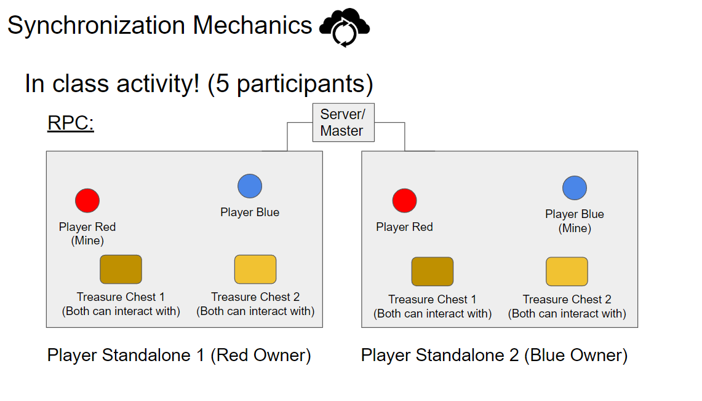
Activity, RPC
Outcomes
The workshop was very well-received, endorsed highly by the community. Also, this is the workshop where Unity folks reviewed, who later offered me an opportunity to design online courses! You may take a closer look if you are interested in the story behind, or shall I say, a fun coincidence.
- My story of joining Unity.
- The current online course project I worked for Unity.
And very unfortunately, the workshop recording link is broken, since it had been recorded by the Game Research Lab Zoom, which didn't store recordings for a long time, but if you are interested in more insights, feel free to contact me or prof. Joey Lee.
- My story of joining Unity.
- The current online course project I worked for Unity.
And very unfortunately, the workshop recording link is broken, since it had been recorded by the Game Research Lab Zoom, which didn't store recordings for a long time, but if you are interested in more insights, feel free to contact me or prof. Joey Lee.
Highlights
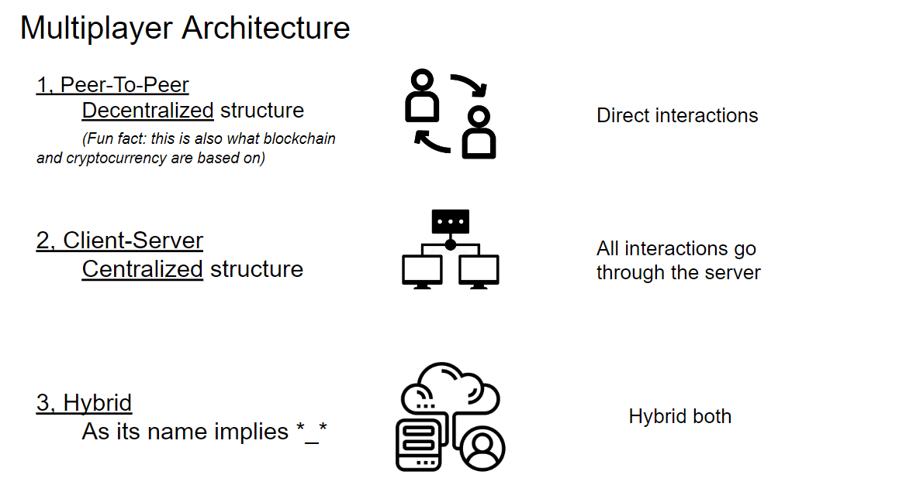
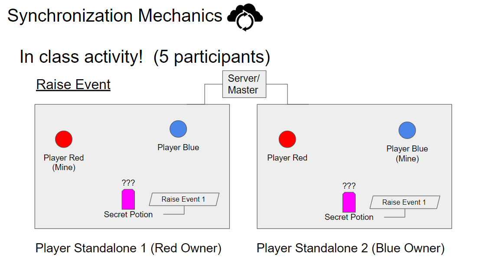
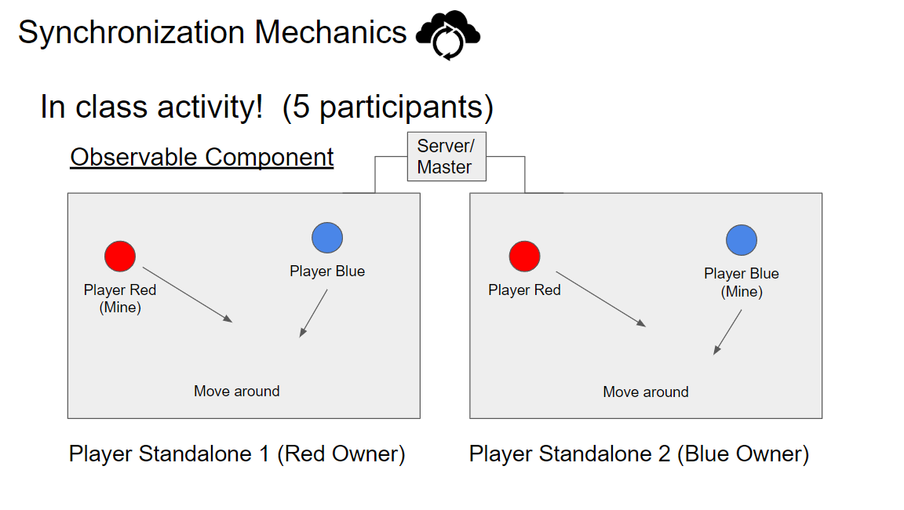
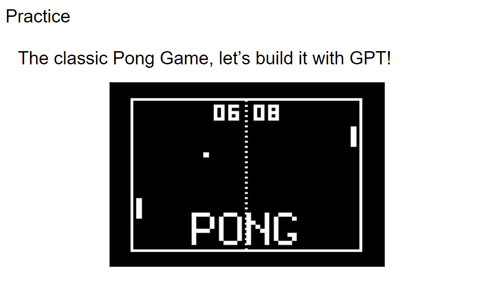
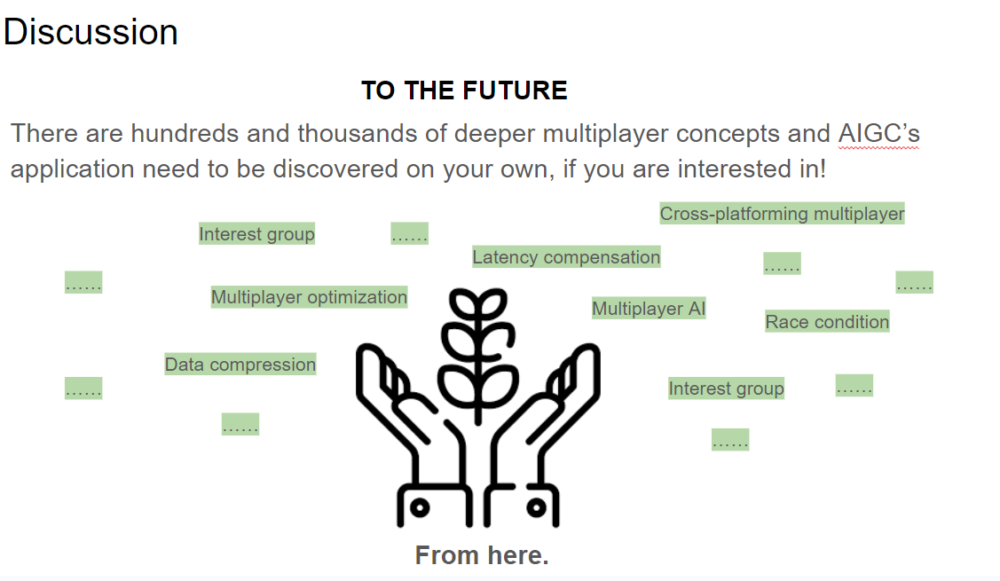
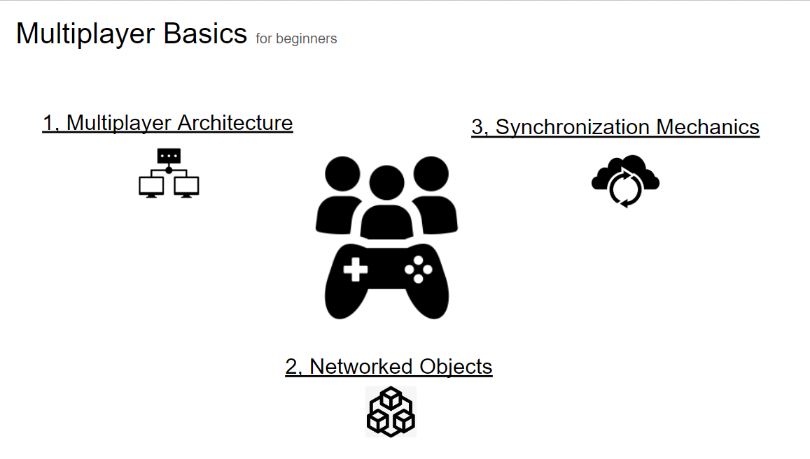
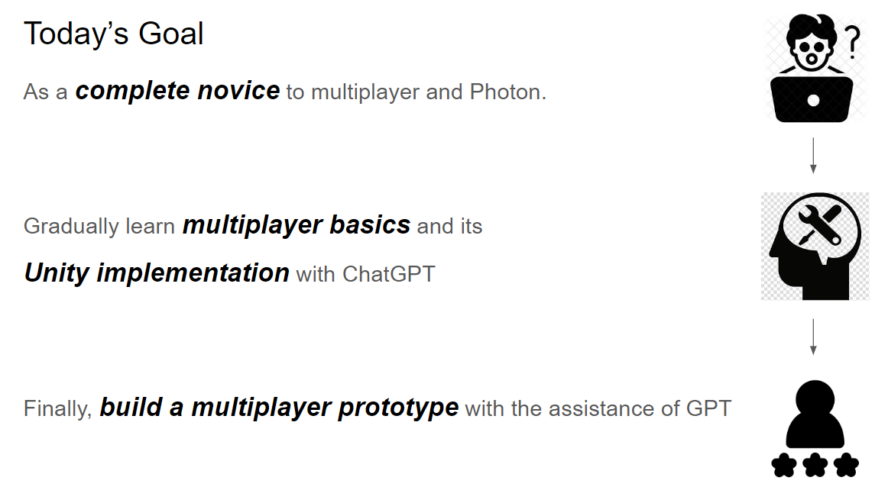
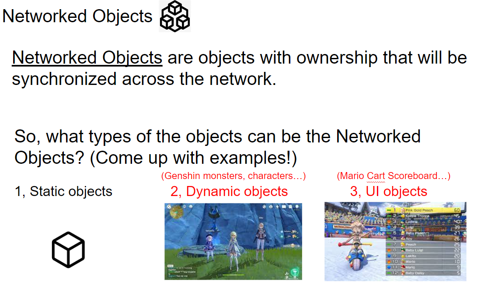
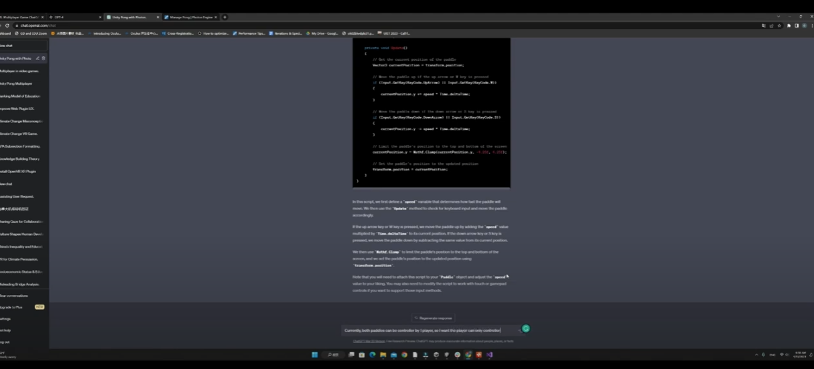
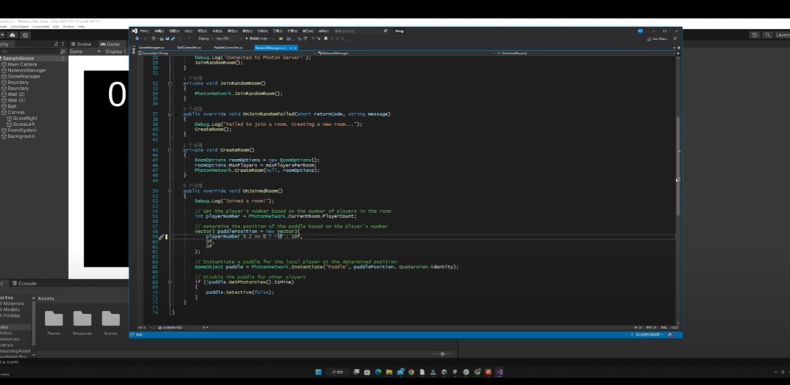
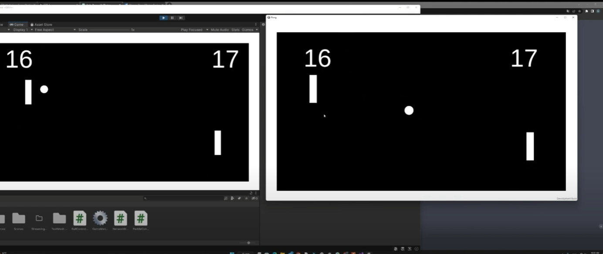
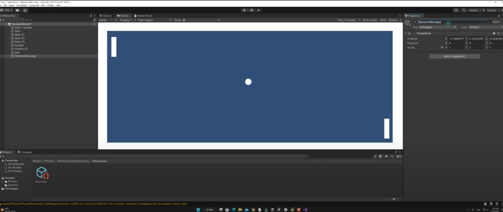
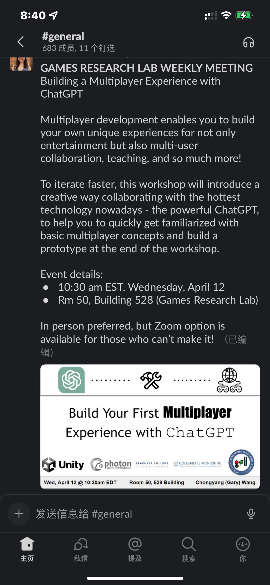
×